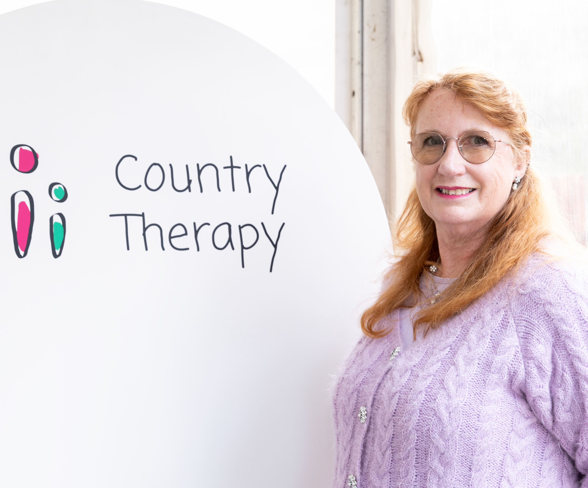

Senior Therapist
Ros George
Senior Occupational Therapist
Ros is a passionate OT with over 25 years' experience working and living in rural Victoria. Graduating from La Trobe University in 1993, her expertise spans equipment prescription, home modifications, falls prevention, seating, pressure care, and health promotion. She fosters genuine person-centred care and values the expertise of everyone she works with.
Aged Care
Community Health
Assistive Technology
Rural OT